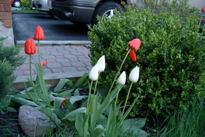
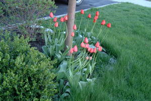
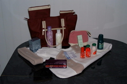
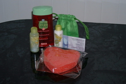
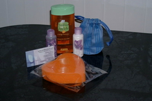

| Home | Greeting | Great land stories | Grot of poetry | Graphic album | Grandiose gadgets | Groan of the mind | Back | Next |
Страница 9. Конкурс!!! Отгадай загадки - 2004!!!
8 Марта 2004г. завершился наш конкурс...
В чем сей конкурс состоял?
Хотите знать имя победителя?
Жаждете лицезреть ответы на загадки?
Напомнить сами загадки?

Дорогие Друзья! Happy Valentine's Day!
Накануне этого замечательного праздника - Дня Валентина, Дня
Любви, хочу предложить вашему вниманию загадки. У меня есть традиция придумывать к Новому году загадки и развлекать тем самым в новогоднюю ночь народ. Ну а вас, дорогие друзья,
развлекать накануне Дня Валентина.
Почти все загадки основаны на игре слов-букв. Например, такая загадка:
Ты часто видишь меня ночью темной,
А вставишь "л", - животным сделаюсь огромным.
Ответ: сон - сЛон
И дальше в том же духе. Если точно не указывается, куда вставлять буквы или какие по счету буквы заменять другими, это значит, что буквы сии могут быть где угодно:
в начале слова, в середине, в конце. В то же время вам могут встретиться загадки ассоциативного характера (не связанные с игрой букв), а то и просто загадки как сами по себе :-).
Точно такой же конкурс был организован в прошлом году. Так что я очень рекомендую вам хотя бы одним глазком взглянуть на прошлогодние
загадки вместе с ответами и, тем самым,
поиметь какое-то представление о моем логическом ходе мыслей :-). Особенно это будет полезно людям, не принимавшим участие в прошлогоднем конкурсе.
Хоть на той странице уже все подробно расписано, я все-таки еще раз определю правила и порядок раздачи призов, тем более что имеются некоторые различия с
прошлогодним конкурсом (не говоря уже, разумеется, о содержании самих загадок :-)).
В чем состоит конкурс? Человек, который пришлет МАКСИМАЛЬНОЕ количество правильных ответов на загадки, получит супер-приз, независимо
от того,
в какой бы части света сей остроумный победитель не находился. Более того, также получат призы и люди, занявшие 2-е и 3-е места.

Ответы присылайте на адрес
. Просто указывайте номер загадки и Ваш ответ. Ответ, как правило, состоит
из двух и более слов, завуалированных в загадке, хотя в некоторых случаях может представлять только одно слово.
В своем письме Вы можете также привести ассоциативный ряд, подтолкнувший Вас к разгадке. И я буду очень признательна, если Вы укажете, какая загадка Вам
больше всего понравилась. Таким образом, это будет конкурс и для меня тоже :).
Правильные ответы и
имена победителей будут анонсированны на этой же страничке! Игра будет иметь продолжение либо до тех пор, пока я не получу 3 первых письма со всеми правильными ответами, либо до
8 Марта 2004 года. В последнем случае победителями будут названы те, кто первыми пришлют максимальное количество правильных отгадок. Свой адрес Вы можете сообщить
сразу же, в письме с ответами. В противном случае, я обязательно дам Вам знать о том, что Вы выиграли этот конкурс и самолично запрошу Ваш адрес.

В качестве призов предлагаются наборы косметических и других продуктов от Yves Rocher.
Не огорчайтесь, дорогие мужчины! Вы сможете
преподнести замечательный подарок своим любимым женщинам: женам, девушкам, мамам, сестренкам. Так что дерзайте!
Слева вы можете лицезреть фотографию супер-приза. А ниже даны фотографии призов для участников, которые займут второе и третье места. По сути, эти наборы
одинаковы, но "серебряный" призер имеет право выбрать себе подарок по желанию: левый или правый.


Warning 1: Вводится новое правило!!! Главные победители прошлого года решили самоустраниться от участия в настоящем конкурсе загадок. Несмотря на то, что они уже
почти все отгадали, они считают, что в этом году надо дать шанс выиграть главный приз кому-то другому. Я подумала, что это справедливо. Такое правило и введем на последующие
конкурсы: выиграл, следующий год пропустил, а уж через год вновь добро пожаловать в игрища!
Warning 2: Людей, дорогих сердцу друзей, которых я имела счастие лицезреть в новогоднюю ночь, очень прошу не присылать ответы и не подсказывать
остальным участникам конкурса :-).
Дорогие читатели! Мы с мужем желаем всем вам крепкой, красивой, бесконечной, независимой Любви!!! Любовь - это высшее счастье, высшее благо!
Будьте счастливы, друзья! Любите и будьте любимы! Во всем успехов вам! И, главное, в нашем конкурсе! Я с нетерпением жду ваших ответов. Наслаждайтесь и ловите фан! :-)
С уважением, любовью и признательностью,
Наташа
Итак, победитель... Победительницей нашего конкурса стала единственная его участница, отгадавшая почти все загадки! Это - Екатерина Осипова из Швейцарии
(вы можете посетить ее сайт - http://members.chello.se/eosipova/). Огромное спасибо Вам, Катя!
Чего, к сожалению, совершенно нельзя сказать НЕучастникам конкурса, начисто проигнорировавшим мой труд, мое желание как-то порадовать и расслабить людей в наш
сложный век, мою любовь к ним... Стыдно, товарищи... Ну да Бог с вами.
Супер-приз, а также один из призов за предполагаемые 2-е и 3-е места заслуженно уходят в Швейцарию к Екатерине!
Есть ложное поверие среди моих друзей, что якобы мои загадки способны отгадать лишь люди, близко меня знающие. Как видите, Катя доказала совершенно обратное.
Она абсолютно случайно попала на Мигренниум, в первый раз в жизни, и... абсолютно неслучайно отгадала уйму загадок, среди коих оказались, между прочим, самые
сложные, на мой взгляд. Так что, друзья, дело, как легко заметить, вовсе не во мне.
В нижеприведенной таблице (дань традиции, в своем роде) приводятся все отгаданные Екатериной Осиповой загадки:
Цвета означают:
-
Правильная разгадка
-
Неправильная разгадка или отсутствует
#
Победитель
Страна
1
2
3
4
5
6
7
8
9
10
11
12
13
14
15
16
17
18
19
20
21
22
23
24
25
26
27
1
Екатерина
ОсиповаШвейцария
Загадка № 1
Я - мужичина не простой.
Я свою пищу, лишь представьте,
Ищу под черною водой.
Две буквы сзади переставьте, -
Я сразу стану пищей той,
Могу быть даже золотой.
Загадка № 2
Бывает, братцы, универ.
Бывает униформа.
А этот, братцы, уни-зверь
Белее всех и, верь не верь,
Наш верный друг бесспорно.
Загадка № 3
Поистине прекрасен мой приход.
Единственное, что не радует народ, -
Со мною много тварей оживает,
Которые потом народ кусают.
А если слоги задом наперед
Вы переставите, придет к вам утешенье.
От злобных тварей классное решенье!
Загадка № 4
Я - мелкий, в колпачке, но если вдруг вы
Меня возьмете (пусть без первой буквы)
И сзади А прилепите, как хвост,
А спереди пришьете эко-чудо,
То я весьма серьезным словом буду
Про индустрии, производства рост.
Загадка № 5
Меня утюжат, носят и стирают.
И всяк спортсмен меня отлично знает.
Но буквой З замените вы М, -
И стану я, друзья, несчастным тем,
Кого хозяйки под дождем бросают.
Загадка № 6
Я - женщина весьма свободных нравов.
Грехи меня нисколько не гнетут.
И хоть желают на меня найти управу,
Я буду вечно здесь. Я просто тут.
Загадка № 7
Я - чувство тех, кто в чем-то был не прав,
Кто сделал что-то лишнее, возможно.
Но истину найти совсем не сложно,
Лишь А на О в том слове поменяв.
Загадка № 8
Предлог да плюс падеж родительный
Того, что есть всегда у головы.
Того, что выглядит бесспорно восхитительно,
Когда за ним уход ведете вы.
Осталось склеить вам, друзья, простое слово.
На карту города оно попасть готово.
Загадка № 9
Без О она растет, там где не надо.
А вот где надо, вовсе не растет.
Но с О она становится усладой
Тому, кого сей грешный мир гнетет.
И кто не прочь бы перебраться в тот.
Загадка № 10
Во мне есть нечто от очей автомобиля.
Я хрупок, и меня легко разбить.
Но если буквы две другими заменить,
То вы легко сумеете открыть,
Чем так пугала всех собака Баскервилей.
Загадка № 11
Из четырех частей он состоит:
Энергии, что пишут на печенье;
Из вопля птицы, что с огромным рвеньем,
Сколько вам жить осталось, прокричит;
Из ноты чрезвычайно мелодичной;
А часть четвертая, - как бублик симпатичный.
Загадка № 12
Мы оба красные,
Но он, когда вареный.
Мы оба вкусные,
Но я, когда сушеный.
Мы оба в кайф:
Он - мужичкам под закусь,
А от меня съезжает крыша накось.
Мы оба - в рифму,
Буквою расхожи.
А в остальном мы вовсе не похожи.
Загадка № 13
Во мне есть что-то от барашка,
А внешне - что-то от слона.
В друзьях у вашего бедняжки
Только рептилия одна.
И будем мы дружны до гроба.
Ведь мы из доброй сказки оба.
Загадка № 14
Качусь я с лошадиной силой.
И даже, может, не с одной.
А чтоб взлететь мне легче было
И пронестися над луной,
Ты меру площади во мне
Смени сопротивленья мерой.
И ночью в звездной синеве
Узришь ты чудо стратосферы.
Загадка № 15
Я - лоб и целое столетье...
И самый умный на планете.
Загадка № 16
Я - звук от водопротеканья.
А вкупе с инструментом лобызанья
Составлю головастое растение,
Что деткам маленьким дает рождение.
(Хотя, возможно, это заблуждение.)
Загадка № 17
Я знаю все даты, все дни назубок.
Начало мое, как целебный цветок.
А окончание не ярко,
Но все же связано с подарком.
Загадка № 18
Я был всемирным. То ли еще будет...
Господь лишь знает, как спасались люди.
Читаюсь единтично с двух концов.
Но лучше б вам не знать мое лицо.
Загадка № 19
Он так сидит! Он сексуален!
Для обольщенья идеален!
Вот только странно он звучит:
Обрубок дерева торчит,
А дальше аббревиатура
Страны, далекой до амура.
Загадка № 20
Немножко кривоватая фигура...
В передней части у нее бандура,
Без коей вам внедриться в самолет
Немыслимо без разных выкрутасов.
А в задней части всяких травок сброд
Без первой буквы, для супов и мяса.
Загадка № 21
Путем дискуссий к вам придет решенье...
Французская приставка, расширенье
Командных файлов. И finita
Самой разрывной буквой алфавита.
Загадка № 22
Венгерский композитор с коротенькой фамилией
Имел в свои года имя довольно милое.
Приклейте к нему слева синоним помещения.
И будет нечто вроде эффекта возмущения.
Едва ли много слов найдется, чтоб сказали
Со всей своей душой: Ох, как заколебали!!!
Загадка № 23
На нем обычно голуби тусуются,
Или цветы на белый свет красуются.
Всему возможно сгинуть вмиг.
Сначала, ах, вороний крик...
Потом вдруг все оборвалось
И с ускореньем унеслось.
Загадка № 24
О! Я пружинистый парниша!
На первом плане у меня
Любовь по-итальянски. Я
Любитель чая по-английски.
Чтоб не подвергнуть себя риску
Быть обворованным, я рад
Настроить дофига оград
Из досок плоских. Только замените
Вы Б на Т. И я готов! - смотрите!
Загадка № 25
Без А в конце - я сверху лью дождем,
А с А - я мыслю о пути, что мы идем
К Всевышнему. Я чувствую, страдаю,
Люблю и о Любви мечтаю.
Загадка № 26
Один из нас - яичная еда.
Второй - это навеки, навсегда...
Висит на шее и спасает дух.
Ну что сказать? Созвучны мы на слух.
Загадка № 27
Я то, что есть внутри тебя.
Я то, что ты снаружи.
Под клавишами моих рук трубят
Твои сосуды дружно.
Систему нервную твою
На уровень снижаю.
Педали бешено давлю.
За что я так тебя люблю,
Что каждый день рожаю
Твой реквием?..
Отгадки!!!
Буквы или сочетания букв, заключенные в квадратные скобки [...], подлежат удалению, дабы в конечном итоге получилось нужное слово.
Буквы, представленные в красном цвете, - либо взаимозаменяемые, либо дополнительные для образования нового слова, либо ударные.
1.
рыбАК - рыбКА
2.
унитаз
3.
вес-на - на-вес
4.
эко [г]номик А => экономика
5.
Майка - Зайка
6.
просто тут => проститутка
7.
винА - винО
8.
у (кого-чего?) лица => улица
9.
трава - Отрава
10.
фАРфор - фОСфор
11.
кал-ку[-ку]-ля-тор => калькулятор
12.
Мак - Рак
13.
чебурашка
14.
кАРета - кОМета
15.
чело - век => человек
16.
кап - уста => капуста
17.
кален[дула] - дар[ить] => календарь
18.
потоп
19.
пень - ЮАР => пеньюар
20.
трап - [с]пеция => трапеция
21.
de - bat - "Ы" => дебаты
22.
интер[ьер] - Ференц [Лист] => интерференция
23.
кар[ррр] - [в]низ => карниз
24.
amore - tea - заТор (вместо заБор) => амортизатор
25.
душ - душА
26.
омлет - амулет
27.
ОРГАНизм
Легко, правда? ;-)
| Top | Home | Greeting | Great land stories | Grot of poetry | Graphic album | Grandiose gadgets | Groan of the mind | Back | Next |